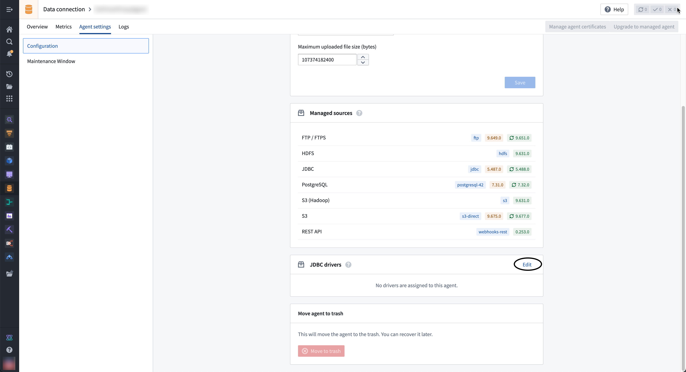
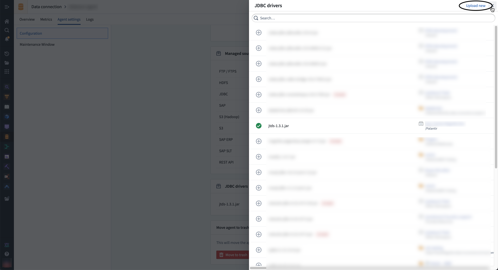
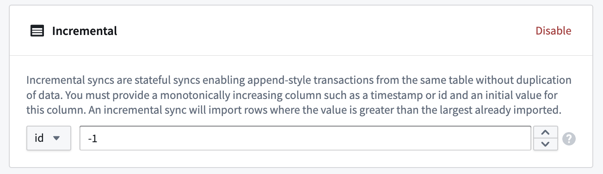
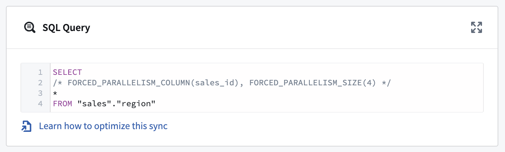
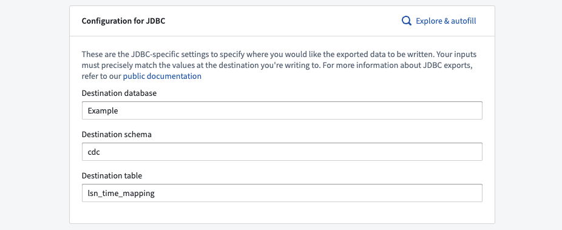
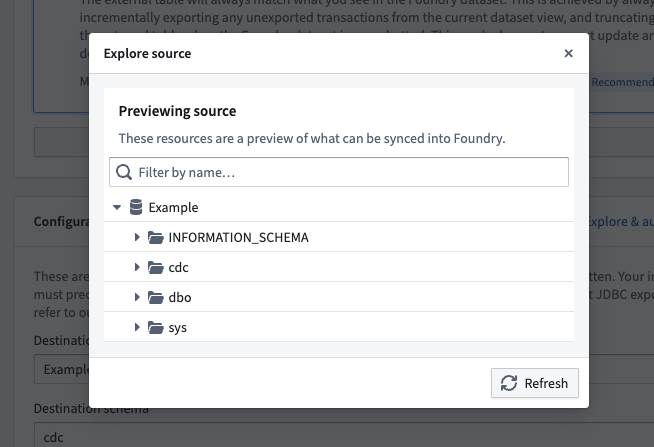

Connect Foundry to JDBC sources to read and sync data between Foundry and most relational databases and data warehouses.
Once the source is configured, you can flexibly define how data should be synced from the database using a SQL query specified in the extract definition. In addition, you can configure an incremental sync that only reads data that has been updated since the last sync was run.
| Parameter | Required? | Description |
|---|---|---|
URL |
Yes | Refer to the source system's documentation for the JDBC URL format, and review the Java documentation â for additional information. |
Driver class |
Yes | Enter the driver class to use when connecting to the database. This driver must be on the classpath at Data Connection runtime. Learn more about JDBC drivers below. |
Credentials |
Yes | The username and password credentials of the JDBC connection. |
JDBC properties |
No | Add property names and values to configure connection behavior. Learn more about JDBC properties below. |
Advanced Options |
No | Expand this field to add optional JDBC output configurations. Learn more about output settings below. |
By default, Data Connection agents ship with the ability to connect to JDBC-compatible systems. However, you must provide a JDBC driver â to successfully connect to the system. You also must specify the driver class, typically found in the public documentation of the particular driver. For example, you can find the class for Snowflake's JDBC driver in their public documentation â.
Foundry worker connections do not require Palantir-signed drivers. You can typically find and download drivers from the documentation of your particular source type, such as Google BigQuery â. You can then upload the driver when you configure the connection.
:::callout{theme="warning" title="Legacy"} Agent worker is in the legacy phase of development. The configuration below is provided for existing agent worker sources. See Foundry worker vs agent worker. :::
For agent worker sources, drivers must be manually uploaded on the agent.
:::callout{theme="warning"} JDBC drivers uploaded to the agent may cause classpath conflicts with other JDBC drivers already present on the agent. To avoid potential conflicts, use a Palantir-provided connector instead of manually uploading a JDBC driver. :::
:::callout{theme="neutral"} For security reasons, the agent requires JDBC drivers to be signed by Palantir to guarantee its authenticity. Contact Palantir Support to obtain signed copies of drivers necessary for your connection. Uploading unsigned drivers to an agent will prevent it from starting. :::
To assign a driver to an agent, follow the steps below:


:::callout{theme="neutral"} When configuring a connection to a JDBC source you can only specify the driver class, not the specific driver. For this reason, you should only add one driver of a given class to an agent. :::
You can optionally add properties â to your JDBC connection to configure behavior. Refer to the documentation of your specific source for additional available JDBC properties to add to your connection configuration.
You can optionally add output overrides to modify the output file type and JDBC sync method. Configured settings will be applied to all JDBC syncs using the source. You can override these parameters for a specific sync by editing the sync configuration. To add output overrides, expand the Advanced Options section at the bottom of the setup page and enter the following:
| Parameter | Required? | Default | Description |
|---|---|---|---|
Output |
Yes | Parquet |
The format of the output file (Avro or Parquet) |
Compression Method |
No | None | Choose between SNAPPY,ZSTD, or no compression method. |
Fetch size |
No | None | The number of rows fetched with each database round trip for a query. Learn more in the section below. |
Max file size |
No | None | Specify the maximum size (in bytes or rows) of the output files. Learn more in the section below. |
The fetch size of an output is the number of rows fetched with each database round trip for a query. By tuning the fetch size, you can alter the total number of network calls per sync. However, the fetch size will affect memory usage; increasing the fetch size will speed up syncs at the cost of increased memory usage. We recommend starting with fetch size: 500 and tuning accordingly.
:::callout{theme="warning"} Fetch size configuration is available based on your JDBC driver. Ensure that your driver is compatible with the fetch size parameter if you require it for output configuration. :::
You can also adjust the max file size (in bytes or rows) of your output files. Doing so may improve the performance and resiliency of your data upload to Foundry.
When specifying file size in Bytes, the number of bytes must be at least double the in-memory buffer size of the Parquet (128MB) or Avro (64KB) writer.
:::callout{theme="warning"} The maximum file size in bytes is approximate; output file sizes may be slightly smaller or larger. :::
To set up a JDBC sync, select Explore and create syncs in the upper right of the source Overview screen. Next, select the tables you want to sync into Foundry. When you are ready to sync, select Create sync for x datasets.
Learn more about source exploration in Foundry.
A pre-query is an optional array of SQL queries that run before the actual SQL query runs. We recommend using pre-queries for use cases where a database refresh must be triggered before running the actual query.
A single SQL query can be executed per sync. This query should produce a table of data as an output and should not perform operations like invoking stored procedures. The results of the query will be saved to the output dataset in Foundry.
Aside from configuring output overrides at the source configuration level, you can choose to apply specific overrides to individual sync outputs. The saved configuration will apply only to the individual sync. Review the output overrides section above for more information about configuration options.
At the sync configuration level, you can choose to Enforce precision limits for an individual JDBC sync. This limit rejects numeric values with precision over 38 decimal places. This setting is disabled by default.
If you are setting up a new sync or dealing with performance issues, consider switching to incremental syncs or parallelizing SQL queries to improve sync speed and reliability.
We recommend first trying the incremental sync method. If issues persist, move on to parallelizing the SQL query.
Typically, syncs will import all matching rows from the target table, regardless if data changed between syncs or not. Incremental syncs, by contrast, are stateful syncs that enable you to do APPEND style transactions from the same table without duplicating data.
Incremental syncs can be used when ingesting large tables from a JDBC source. To use incremental syncs, the table must contain a column that is strictly monotonically increasing.
Follow the steps below to configure an incremental JDBC sync:
APPEND on the Edit syncs page.
Example: A 5 TB table contains billions of rows that you want to sync to a JDBC source. The table has a monotonically increasing column called id. The sync can be configured to ingest 50 million rows at a time using the id column as the incremental column, with an initial value of -1 and a configured limit of 50 million rows.
When a sync is initially run, the first 50 million rows (ascending based on id) containing an id value greater than -1 will be ingested into Foundry. For example, if this sync was run several times and the largest id value ingested during the last run of the sync was 19384004822, the next sync will ingest the next 50 million rows starting with the first id value greater than 19384004822 and so on.
Remember to also add a limit to the SQL query. For example, if your query was SELECT * FROM "sales"."region", it could become SELECT * FROM "sales"."region" WHERE sale_id > ? limit 100000; every time the build runs, 100000 rows will be imported into Foundry. The ? value of the query will automatically update with the value from the last run.
:::callout{theme="neutral"} For JDBC systems handling timestamp columns with no timezone definition, the timestamp is assumed to be expressed in UTC and incremental queries will run accordingly. :::
:::callout{theme="warning"} The parallel feature runs separate queries against the target database. Before parallelizing the SQL query, consider how it could affect live-updating tables that may be treated differently by queries that occur at slightly different times. :::
If performance does not improve after switching to incremental syncs, you can parallelize an SQL query to split it into multiple smaller queries that will be executed in parallel by the agent.
To achieve this, you must change your SQL query to a new structure. For example:
SELECT
/* FORCED_PARALLELISM_COLUMN(<column>), FORCED_PARALLELISM_SIZE(<size>) */
*
FROM <table_name>
The necessary parallelism details of the query are explained below.
FORCED_PARALLELISM_COLUMN(<column>): Specifies the column on which the table will be divided. It should be a numeric column (or a column expression that yields a numeric column) with a distribution as even as possible.
FORCED_PARALLELISM_SIZE(<size>): Specifies the degree of parallelism. For example, 4 would result in five simultaneous queries: four queries would split up the values for the specified parallelism column, and another would query for NULL values in the parallelism column.
For example, using our SQL query above, SELECT * FROM sales_data, we can parallelize it by including additional details:
SELECT
/* FORCED_PARALLELISM_COLUMN(sales_id), FORCED_PARALLELISM_SIZE(4) */
*
FROM "sales"."region"

:::callout{theme="warning"}
When using parallelism with a WHERE clause that contains an OR condition, wrap conditions in parentheses to indicate how the conditions should be evaluated. For example: SELECT /* FORCED_PARALLELISM_COLUMN(sales_id), FORCED_PARALLELISM_SIZE(4) */ * FROM "sales"."region" WHERE (condition1 = TRUE OR condition2 = TRUE)
:::
You can sync data from a Custom JDBC source directly into Foundry Iceberg tables. Iceberg syncs support both non-incremental and incremental batch ingestion, along with multiple write modes, and run on the Foundry worker runtime. For configuration details and supported write modes, review the Iceberg syncs documentation.
Data Connection supports table exports of datasets with schemas to JDBC sources.
Review our documentation to learn how to enable, configure, and schedule JDBC exports.
Table exports using a JDBC source require specifying a destination database, schema, and table. These inputs determine the destination of Foundry exports and must match the values that already exist in the target database.
You can either manually enter values for the destination database, schema, and table, or you can use the Explore & autofill button to see a source preview to explore tables that exist in the target database, and autofills the inputs based on your selection.


You must select an export mode.
Batch size refers to the number of records processed in a single batch when transferring data between Foundry and your source. Adjusting the batch size can impact the performance and efficiency of data export operations, allowing for optimized resource usage and reduced execution time.
By default, export batching is disabled. After enabling export batching, you can choose a batch size between 2 and 5000. If the driver on which your source depends is eligible for export batching, this configuration will take effect upon the execution of next export.
Health checks run on sources to verify liveness and availability of the underlying source. By default, these run every 60 minutes and are executed from each agent assigned to the source. For JDBC sources, the health check is implemented as a SELECT 1 query.
:::callout{theme="warning"} Export tasks are a legacy feature that is not recommended for new implementations. All new exports should use the current recommended export workflow. This documentation is provided for users who are still using legacy export tasks. :::
Export tasks support the following databases:
A basic JDBC export task would look as follow:
type: export-jdbc-task
exporterType: parquet
datasets:
- inputAlias: myInput # only required if you have more than 1 input
writeDirectly: true
writeMode: Overwrite
table:
database: mydb # Optional
schema: public # Optional
table: mytable
The complete configuration options are:
type: export-jdbc-task
exporterType: parquet
# Parallel execution
parallelize: false # Run exports for each dataset in parallel (up to 8)
# SQL execution hooks
preSql: # SQL statements run before export
- TRUNCATE TABLE staging_table
stagingSql: # SQL statements run before table rename
- SELECT 1
afterSql: # SQL statements run after export
- INSERT INTO production_table SELECT * FROM staging_table
# Transaction management
manualTransactionManagement: false # Set true to manage transactions yourself
transactionIsolation: READ_COMMITTED # java.sql.Connection.TransactionIsolationLevel
# Dataset-specific configurations
datasets:
- inputAlias: myInput
table:
database: mydb
schema: public
table: mytable
# Write configuration
writeDirectly: false # false = use staging table first
copyMode: insert # insert or directCopy (PostgreSQL only)
batchSize: 1000 # Rows per insert statement
writeMode: ErrorIfExists # ErrorIfExists, Append, Overwrite, AppendIfPossible
# Incremental export
incrementalType: snapshot # snapshot or incremental
# Performance
exporterThreads: 1 # Parallel file export threads
# Identifier handling
quoteIdentifiers: true # Quote column names
# Transaction isolation for this export
exportTransactionIsolation: READ_UNCOMMITTED
When writeDirectly: false (default), the write flow is as follow:
{tableName}_staged_When writeDirectly: true, data is written directly in the final table, which might be desired for incremental exports.
copyMode controls how data is being copied to the database.
quoteIdentifiers controls if identifiers should be quoted.
The default is true because there are many cases where a valid Foundry column name would not be a valid database column name, for example due to special characters (1_column, my column, my-column) or reserved words (level, values).
You may wish to turn this to false if you are exporting to Oracle DB or IBM DB2, since in these databases you will always need to quote the columns whenever you reference them.
Incremental exports allow you to export only the data that has changed since the last export. When incrementalType is set to incremental, the first export behaves like a snapshot, exporting all data and remembering the last exported transaction. Subsequent exports only include new transactions if the previous transaction is still present in the dataset; otherwise, it falls back to a full snapshot.
For JDBC exports, this option is specified per dataset rather than globally.
The recommended approach uses a staging table pattern: incremental data is written to a temporary table, then merged into the final destination using preSql and afterSql statements. Set writeDirectly: true to avoid creating additional temporary tables, and use writeMode: AppendIfPossible to overwrite on the first run and append on subsequent runs.
type: export-jdbc-task
preSql:
- TRUNCATE TABLE mytable_incremental
datasets:
- inputAlias: myInput
table:
schema: public
table: mytable_incremental
writeDirectly: true
writeMode: AppendIfPossible
incrementalType: incremental
afterSql:
- INSERT INTO mytable SELECT * FROM mytable_incremental
The export will create a MULTISET table with the first column in your dataset treated as the partition key. Please re-arrange your columns so the first column has many values so that rows do not get indexed under one partition.
Teradata does not support multiple Data Definition Language statements in one transaction. After each of DROP, CREATE, RENAME the exporter will make a commit.
By default, Foundry String columns are exported as LONG VARCHAR. To override the default and use VARCHAR(N) type instead, you can specify varchar size per column using the dbOptions config as shown below:
datasets:
- table:
table: mytable
dbOptions:
type: 'teradata'
columnVarcharSize:
someColumnName: 1000
It is recommended to increase batchSize to ~50,000 when exporting to Snowflake. Keep in mind this will consume more heap memory on the agent.
When exporting to an Oracle database, you can adapt
the maximum column size (default 255 bytes) using columnVarcharSize:
datasets:
- table:
table: mytable
dbOptions:
type: 'oracle'
columnVarcharSize:
someColumnName: 1000
When exporting large amounts of data, you may wish to use the following options:
Set parallelize: true to perform the export of each input dataset in parallel, and define the number of threads with datasets.[].exporterThreads. The export of each file in this dataset will be performed in parallel, with the number of specified threads. A good starting value would be the number of available cores on agent.
Adjust batchSize based on database and memory constraints
If you encounter batch insert errors (such as PreparedStatement batch request failures), consider these solutions:
Column ordering: Place high-cardinality columns first in your dataset. Databases like Teradata use the first column as a partition key, and low-cardinality first columns can cause all rows to be indexed under a single partition, leading to failures.
String encoding: Ensure your string data uses compatible character encoding for your target database. Teradata requires ASCII or Latin-1 encoding, not UTF-8. You may need to clean or transform your data before export.
Debugging with batch size: Reduce batchSize to 1 to isolate problematic rows. This slows the export but helps identify exactly which row is causing failures due to data quality issues or constraint violations.